전기산업기사 (2002-05-26 기출문제)
1과목: 전기자기학
1. 반지름 a[m]인 직선상 도체에 전류I[A]가 고르게 흐를 때 도체내의 전자에너지와 관계 없는 것은?
- 투자율
- 도체의 길이
- 전류의 크기
- 도체의 단면적
(정답률: 47%)

2. 자속 ø[Wb]가 주파수 f[Hz]로 ø = ømsin2πft[Wb]일 때, 이 자속과 쇄교하는 권수 N회인 코일에 발생하는 기전력은 몇 [V]인가?
- -2πfNømcos2πft
- -2πfNømsin2πft
- 2πfNømtan2πft
- 2πfNømsin2πft
(정답률: 68%)
3. 대지 중의 두 전극사이에 있는 어떤점의 전계의세기가 6[V/cm], 지면의 도전율이 10-4[℧/cm]일 때 이 점의 전류밀도는 몇 [A/cm2]인가?
- 6×10-4
- 6×10-3
- 6×10-7
- 6×10-1
(정답률: 75%)
4. 무한 평면도체로부터 거리 a[m]의 곳에 점전하 2π[c]이있을 때 도체 표면에 유도되는 최대 전하밀도는 몇 [c/m2]인가?
- -1/a2
- -1/2a2
- -1/2πa
- -1/4πa
(정답률: 39%)
5. 한 변이 50[cm]인 정사각형위 전극을 가진 평행판콘덴서가있다. 이 극판의 간격을 5[mm]로 할 때 정전용량은 약 몇 [pF]인가? (단, 단말(端末)효과는 무시한다.)
- 373
- 380
- 410
- 443
(정답률: 49%)
6. 반지름 1[m]의 원형코일에 1[A]의 전류가 흐를 때 중심점의 자계의 세기는 몇 [AT/m]인가?
- 1/4
- 1/2
- 1
- 2
(정답률: 77%)
7. 거리 r에 반비례하는 전계의 크기를 주는 대전체는?
- 점전하
- 선전하
- 구전하
- 무한평면전하
(정답률: 74%)
8. 자계의 세기가 2×104[AT/m]인 평등자계내에서 자계와 30°각도로 무한장 직선도체를 놓고 도체에 전류 2[A]를흘렸을 경우, 도체에 작용하는 단위길이당의 힘은 몇 [N/m]인가?
- 2π×10-3
- 4π×10-3
- 6π×10-3
- 8π×10-3
(정답률: 35%)
9. 반지름 a[m]인 도체구에 전하 Q[c]이 있을 때, 이 도체구가 유전률 ε[F/m]인 유전체에 있다고 하면 이 도체구가가진 에너지는 몇 [J]인가?
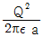
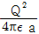
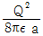
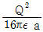
(정답률: 48%)
10. 공심(空心)솔레노이드의 내부자계의 세기가 800[AT/m]일 때, 자속밀도는 몇 [Wb/m2]인가?
- 10-3
- 10-4
- 10-5
- 10-6
(정답률: 46%)
11. 100[kW]의 전력이 안테나에서 사방으로 균일하게 방사될때 안테나에서 1[km]의 거리에 있는 전계의 실효값은 몇 [V/m]인가?
- 1.73
- 2.45
- 3.68
- 6.21
(정답률: 62%)
12. 공기 중에서 1[V/m]의 전계로 2[A/m2]의 변위전류를 흐르게 하려면 주파수는 약 몇 [Hz]이어야 하는가?
- 1.8×1010
- 3.6×1010
- 5.4×1010
- 7.2×1010
(정답률: 50%)
13. 유전체에 가한 전계 E[V/m]와 분극의 세기 P[C/m2]간의 관계는?
- P = ε0(εS-1)E
- P = ε0(εS+1)E
- P = εS(ε0-1)E
- P = (ε-1)E
(정답률: 79%)
14. 그림과 같이 진공 중에 반지름 r[m], 중심 간격 d[m]인 평행 도체가 있다. x ≫ r라 할 때 원통도체의 단위 길이당정전용량은 몇 [F/m]인가?
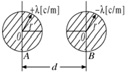
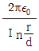
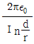
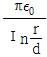
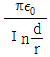
(정답률: 48%)
15. 환상철심에 감은 코일에 5[A]의 전류를 흘리면 2000[AT]의 기자력이 생기는 것으로 한다면, 코일의 권수는 얼마로하여야 하는가?
- 100회
- 200회
- 300회
- 400회
(정답률: 80%)
16. 공기 중에 0.1×10-6[C]의 점전하가 있다. 전하 Q에서 거리 a = 1[m], b = 2[m]에 있는 두 점 a, b사이의 전위차는 몇 [V]인가?
- 4.5
- 45
- 450
- 4500
(정답률: 63%)
17. 유전체 중의 전계의 세기를 E, 유전률을 ε이라 하면 전기변위는?
- ε/E
- E/ε
- εE2
- εE
(정답률: 69%)
18. 비투자율 μr인 철심이든 환상 솔레노이드의 권수가 N회, 평균지름이 d[m], 철심의 단면적이 A[m2]라 할 때 솔레노이드에 I[A]의 전류가 흐르면, 자속은 몇 [Wb]인가?
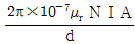
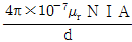
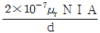
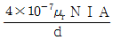
(정답률: 44%)
19. 전류와 자계사이에 직접적인 관련이 없는 법칙은?
- 암페어의 오른나사법칙
- 비오사바아르의 법칙
- 플레밍의 왼손법칙
- 렌쯔의 법칙
(정답률: 59%)
20. 전기쌍극자로부터 임의의 점의 거리가 r이라할 때, 전계의 세기는 r과 어떤 관계가 있는가?
- 1/r에 비례
- 1/r2에 비례
- 1/r3에 비례
- 1/r4에 비례
(정답률: 77%)
2과목: 전력공학
21. 안정권선(△권선)을 가지고 있는 대용량 고전압의 변압기에서 조상용 전력용 콘덴서는 주로 어디에 사용되는가?
- 주변압기의 1차
- 주변압기의 2차
- 주변압기의 3차(안정권선)
- 주변압기의 1차와 2차
(정답률: 49%)
22. 전주사이의 경간이 80[m]인 가공 전선로에서 전선1[m]의 하중이 0.37[kg], 전성의 딥이 0.8[m]라면 전선의 수평장력은 몇 [kg]인가?
- 330
- 350
- 370
- 390
(정답률: 67%)
23. 최근 전력계통에서 전력케이블의 사용이 많아지고 있는 바, 이에 따른 계통의 전압조정 및 보호방식에 많은 문제 점이발생하고 있는데 이들에 대한 설명으로 옳은 것은?
- 적당한 개소에 분로용 콘덴서를 설치하여 무효전력을 흡 수토록하고 전압변동률을 줄인다.
- 계통의 정전용량이 커져, 경부하시에는 폐란티효과로 인 하여 전압상승이 발생할 가능성이 많아진다.
- 중성점 접지방식의 경우, 종류에 따라서는 고장시 반파의 정류전류가 흐르로 대지정전용량이 커져 영상임피던스도 커진다.
- 접지사고시 과도 지락전류가 적어 지락보호에 대해서 가 공선로와 같은 무리를 할 필요가 없다.
(정답률: 48%)
24. 복수기에 냉각수를 보내주는 펌프는?
- 순환펌프
- 급수펌프
- 배출펌프
- 복수펌프
(정답률: 47%)
25. 분산부하의 배전선로에서 선로의 전력손실은?
- 전압강하에 비례한다.
- 전압강하에 반비례한다.
- 전압강하의 자승에 비례한다.
- 전압강하의 자승에 반비례한다.
(정답률: 39%)
26. SF6차단기에 관한 설명으로 옳지 않은 것은?
- SF6가스는 절연내력이 공기의 2~3배 정도이고 소호능력 이 공기의 100~200배 정도이다.
- 밀폐구조이므로 소음이 없다.
- 근거리 고장 등 가혹한 재기전압에 대해서도 우수하다.
- 아크에 의하여 SF6가스는 분해되어 유독가스를 발생시킨 다.
(정답률: 76%)
27. 지중선 계통은 가공선 계통에 비하여 어떠한가?
- 인덕턴스, 정전용량이 모두 적다.
- 인덕턴스, 정전용량이 모두 크다.
- 인덕턴스는 적고 정전용량은 크다.
- 인덕턴스는 크고 정전용량은 적다.
(정답률: 66%)
28. 변전소에서 수용가에 공급되는 전력을 끊고 소내 기기를 점검할 필요가 있을 경우와, 점검이 끝난 후 차단기와 단로기를 개폐시키는 동작을 설명한 것으로 옳은 것은?
- 점검시에는 차단기로 부하회로를 끊고 단로기를 열어야하 며 점검후에는 차단기로 부하회로를 연결한 후 단로기를 넣어야 한다.
- 점검시에는 단로기를 열고 난 후 차단기를 열어야하며,점 검후에는 단로기를 넣고 난 다음에 차단기로 부하 회로를 연결하여야 한다.
- 점검시에는 단로기를 열고 난 후 차단기를 열어야 하며 점검이 끝난 경우에는 차단기를 부하에 연결한 다음 단로 기를 넣어야 한다.
- 점검시에는 차단기로 부하회로를 끊고 난 다음에 단로기 를 열어야 하며, 점검후에는 단로기를 넣은후 차단기를 넣어야한다.
(정답률: 62%)
29. 수차의 조속기가 너무 예민하게 되면 발생되는 현상은?(오류 신고가 접수된 문제입니다. 반드시 정답과 해설을 확인하시기 바랍니다.)
- 탈조를 일으키게 된다.
- 수압상승률이 크게 된다.
- 속도변동률이 작게 된다.
- 전압변동률이 작게 된다.
(정답률: 26%)
30. 직렬축전기를 선로에 삽입할 때의 현상으로 옳은 것은?
- 장거리 선로의 인덕턴스를 보상하므로 전압강하가 많아진 다.
- 부하의 역률이 나쁜 선로일수록 효과가 좋다.
- 수전단의 전압변동률을 증가시킨다.
- 안태안정도가 감소하여도 최대송전전력이 커진다.
(정답률: 54%)
31. 차단기의 개방시 재점호를 일으키기 가장 쉬운 경우는?
- 1선 지락전류의 경우
- 무부하 충전전류인 경우
- 무부하 변압기의 여자전류인 경우
- 3상 단락전류인 경우
(정답률: 59%)
32. 3상용 차단기의 정격용량 선정은 차단기의 정격전압과 정격차단전류와의 곱을 몇 배한 것을 참고치로 하는가?
- 3
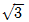
- 1
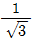
(정답률: 70%)
33. 선로정수를 전체적으로 평형되게 하고, 근접 통신선에 대한 유도장해를 줄일 수 있는 방법은?(오류 신고가 접수된 문제입니다. 반드시 정답과 해설을 확인하시기 바랍니다.)
- 이도를 준다.
- 연가를 한다.
- 복도체를 사용한다.
- 소호리액터접지를 한다.
(정답률: 66%)
34. 송전선로에서 코로나 임계전압이 높아지는 경우는?
- 온도가 높아지는 경우
- 상대공기밀도가 작을 경우
- 전선의 지름이 큰 경우
- 기압이 낮은 경우
(정답률: 60%)
35. 수전단 전압 60000[V], 전류 200[A], 선로의 저항 R = 7.5[Ω], 리액턴스 X = 10.8[Ω], 역율 0.8일 때 전압강하율은 몇[%] 인가?
- 6.38
- 6.82
- 7.21
- 7.87
(정답률: 46%)
36. 배전선의 전압조정 방법이 아닌 것은?
- 승압기 사용
- 유도전압조정기 사용
- 주상변압기 탭 전환
- 병렬콘덴서 사용
(정답률: 61%)
37. 송전계통에서 지락보호계전기의 동작이 가장 확실한 접지방식은?
- 직접접지방식
- 비접지방식
- 고저항접지방식
- 소호리액터접지방식
(정답률: 75%)
38. 전력선반송 보호계전방식의 장점이 아닌 것은?
- 장치가간단하고 고장이없으며 계전기의 성능저하가없다.
- 고장의 선택성이 우수하다.
- 동작이 예민하다.
- 고장점이나 계통의 여하에 불구하고 선택차단개소를 동시 에 고속도 차단할 수 있다.
(정답률: 43%)
39. 설비용량이 3[kW]인 주택에서 최대사용전력이 1.8[kW] 일 때의 수용률은 몇[%]인가?
- 40
- 50
- 60
- 70
(정답률: 71%)
40. 모선의 단락용량이 10000[MVA]인 154[kV] 변전소에서 4[kV]의 전압 변동폭을 주기에필요한 조상설비는 몇 [MVA] 정도 되는가?
- 100
- 160
- 200
- 260
(정답률: 33%)
3과목: 전기기기
41. 직류전동기의 설명중 바르게 설명한 것은?
- 전동차용 전동기는 차동복권 전동기 이다.
- 직권 전동기가 운전중 무부하로 되면 위험 속도가 된다.
- 부하변동에 대하여 속도변동이 가장 큰 직류 전동기는 분 권전동기이다.
- 직류직권 전동기는 속도조정이 어렵다.
(정답률: 56%)
42. 동기 발전기의 돌발 단락 전류를 주로 제한하는 것은?
- 동기 리액턴스
- 누설 리액턴스
- 권선저항
- 동기 임피던스
(정답률: 50%)
43. 25[kW], 125[V], 1200[rpm]의 타여자 발전기가 있다. 전기자 저항(브러시포함)은 0.04[Ω]이다. 정격상태에서 운전하고 있을 때 속도를 200[rpm]으로 늦추었을 경우 부하전류는 어떻게 변화하는가? (단, 전기자 반작용은 무시하고 전기자회로 및 부하저항값 은 변하지 않는다고 한다.)
- 33.3
- 200
- 1200
- 3125
(정답률: 45%)
44. 단상반파 정류회로에서 변압기 2차전압의 실효값을 E[V]라 할 때 직류전류 평균값[A]은 얼마인가? (단, 정류기의 전압강하는 e[V]이다.)
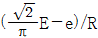
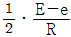
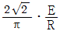
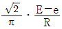
(정답률: 44%)
45. 변압기의 임피던스 전압이란?
- 단락전류에 의한 변압기 내부전압 강하
- 정격전류시 2차측 단자전압
- 무부하 전류에 의한 2차측 단자전압
- 정격전류에 의한 변압기 내부전압 강하
(정답률: 32%)
46. 직류 분권 전동기의 계자 저항을 운전 중에 증가하면?
- 속도증가
- 속도감소
- 부하증가
- 자속증가
(정답률: 61%)
47. 반도체 사이리스터에 의한 제어는 무엇을 변환시키는 것인가?
- 회전수
- 토오크
- 주파수
- 위상각
(정답률: 65%)
48. 직류직권 전동기를 단상 정류자 전동기로 사용하기 위하여교류를 가했을 때 발생하는 문제점을 열거한 것이다. 이 중에서 틀린 것은?
- 철손이 크다.
- 계자권선이 필요없다.
- 역률이 나쁘다.
- 정류가 불량하다.
(정답률: 52%)
49. 3상 동기발전기에서 권선 피치와 자극 피치의 비를 13/15의 단절권으로 하였을 때의 단절권 계수는?
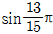
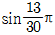
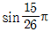
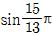
(정답률: 58%)
50. 유도전동기의 실부하법에서 부하로 쓰이지 않는 것은?
- 전기동력계
- 프로니 브레이크
- 전동 발전기
- 손실을 알고있는 직류발전기
(정답률: 35%)
51. 직류 전동기의 정출력 제어를 위한 속도 제어법은?
- 워어드 레오너드 제어법
- 전압 제어법
- 계자 제어법
- 전기자 저항 제어법
(정답률: 50%)
52. 단권 변압기의 3상 결선에서 △결선인 경우, 1차측 선간전압 V1, 2차측 선간전압 V2일 때 단권 변압기 용량/부하용량은? (단, V1＞V2인 경우)
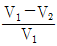
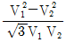
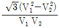
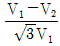
(정답률: 47%)
53. 권선형 3상 유도전동기가 있다. 2차 회로는 Y로 접속되고 2차 각 상의 저항은 0.3[Ω]이며, 1차, 2차 리액턴스의 합은 2차측에서 보아 1.5[Ω]이라 한다. 기동시에 최대 토오크를 발생하기 위해서 삽입하여할 저항[Ω]은 얼마인가? (단, 1차 각상의 저항은 무시함)
- 1.2
- 1.5
- 2
- 2.2
(정답률: 44%)
54. 60[Hz], 6극 200[V], 10[kW]의 3상 유도전동기가 960[rpm]으로 회전하고 있을 때의 회전자기전력의 주파수 [Hz]는?
- 4
- 12
- 6
- 8
(정답률: 54%)
55. 유도 발전기의 슬립(Slip) 범위에 속하는 것은?
- 0＜s＜1
- s = 0
- s = 1
- -1＜s＜0
(정답률: 44%)
56. 수은정류기에 있어서 정류기의 밸브작용이 상실되는현상은
- 점호
- 역호
- 실호
- 통호
(정답률: 56%)
57. 변압기의 누설 리액턴스를 줄이는 가장 효과적인 방법은?
- 철심의 단면적을 크게한다.
- 코일의 단면적을 크게한다.
- 권선을 동심 배치한다.
- 권선을 분할하여 조립한다.
(정답률: 43%)
58. 단상변압기가 있다. 전부하에서 2차 전압은115[V]이고, 전압 변동률은 2[%]이다. 1차 단자 전압[V]은? (단, 1차, 2차 권선비는 20 : 1이다.)
- 2356
- 2346
- 2336
- 2326
(정답률: 60%)
59. 정격이 동일한 A, B 두 대의 단상 변압기 1.500[KVA]의 임피던스 전압은 각각 6[%]와 4[%]이다. 이것을 병렬로 하면몇[KVA]의 부하를 걸 수 있는가?
- 2500
- 1500
- 2000
- 3000
(정답률: 38%)
60. 3상 송전선의 수전단에서 3300[V],전류 800[A],역률 0.8의지상전력을 수전하는 경우 동기조상기를 사용해서 역률을100[%]로 개선하고자 한다. 필요한 동기조상기의 용량 [KVA]은?
- 1452
- 1584
- 2743
- 3200
(정답률: 40%)
4과목: 회로이론
61. 한상의 직렬임피던스가 R = 6[Ω], XL = =8[Ω]인 △결선평형부하가 있다. 여기에 선간전압 100[V]인 대칭3상 교류전압을 가하면 선전류는 몇[A]인가?
- 3
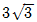
- 10
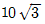
(정답률: 65%)
62. 비접지 3상Ｙ부하에 각선에 흐르는 비대칭 각 선전류를 ia, ib, ic 할 때 전류의 영상분 i0는?
- ia + ib
- ia + ib + ic
- 1/3(ia - ib - ic)
- 0
(정답률: 55%)
63. 전선 1[km]당 0.02[uF]의 정전용량을 가진 50[km] 1회선의 3상 전선이 있다. 송전단에서 22[kV], 60[Hz]의 대칭 3상 전압을 가할 때의 무부하 충전용량 [kVA]은?
- 162
- 172
- 182
- 192
(정답률: 41%)
64. 그림 (a), (b)와 같은 특성을 갖는 전압원은 어느 것에 속하는가?
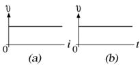
- 시변, 선형소자
- 시불변, 선형소자
- 시변, 비선형소자
- 시불변, 비선형소자
(정답률: 46%)
65. 비정현파를 여러개의 정현파의 합으로 표시하는 방법은?
- 키르히호프의 법칙
- 노오튼의 정리
- 푸리에 분석
- 테일러의 공식
(정답률: 51%)
66. 임피던스 Z = 15+j4[Ω]의 회로에 i = 10(2+j)를 흘리는데 필요한 전압 V를 구하시오.
- 10(26+j23)
- 10(34+j23)
- 10(30+j4)
- 10(15+j8)
(정답률: 53%)
67. 저항 R, 인덕턴스 L, 콘덴서 C의 직렬회로에서 발생되는과도현상이 진동이 되지 않는 조건은?
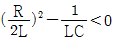
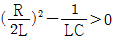
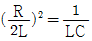
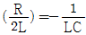
(정답률: 48%)
68. f(t) = sin t + 2cos t를 라플라스 변환하면?
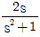
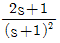
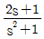
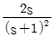
(정답률: 51%)
69. 다음과 같은 왜형파 교류 전압, 전류의 전력을 계산하면?
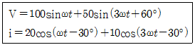
- 750[W]
- 1000[W]
- 1299[W]
- 1732[W]
(정답률: 45%)
70. ℒ[t2eat]은 얼마인가?
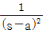
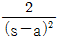
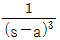
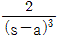
(정답률: 50%)
71. 다음중 초[s]의 차원을 갖지 않은 것은 어느것인가? (단, R는 저항, L는 인덕턴스, C는 커패시턴스이다.)
- RL
- RC
- L/R
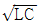
(정답률: 33%)
72. 전류가 1[H]의 인덕터에 흐르고 있을 때 인덕터에 축적되는 에너지 [J]는 얼마인가? (단,
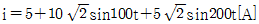
)- 150
- 100
- 75
- 50
(정답률: 52%)
73. 그림과 같은 고역 여파기에서 공칭 임피던스 K[Ω] 및 차단 주파수 fc[KHz]는?
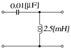
- 400, 25.9
- 460, 20.9
- 480, 18.9
- 500, 15.9
(정답률: 44%)
74. 그림과 같은 회로의 전달함수는? (단, T = RC이다.)
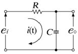
- TS + 1
- TS2 + 1
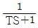
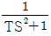
(정답률: 53%)
75. 대칭 3상 Y부하에서 각상의 임피던스가 Z = 3+j4[Ω]이고 부하전류가 20[A]일 때 이 부하에서 소비되는 전력[W]는?
- 3600
- 1400
- 1600
- 1800
(정답률: 55%)
76. 100[V] 전원에 1[KW]의 선풍기를 접속하니 12[A]의 전류가 흘렀다. 선풍기의 무효율[%]은?
- 50
- 55
- 83
- 91
(정답률: 45%)
77. 3상 회로에 있어서 대칭분 전압이 V0 = 8+j3[V], V1 = 6-j8[V], V2 = 8+j12[V]일 때 상의 전압[V]은?
- 6 + j7
- 8 + j12
- 6 + j14
- 16 + j4
(정답률: 43%)
78. 임피던스궤적이 직선일 때 이의 역수인 어드미턴스 궤적은?
- 원점을 통하는 직선
- 원점을 통하지 않는 직선
- 원점을 통하는 원
- 원점을 통하지 않는 원
(정답률: 54%)
79. 그림과 같은 단위 계단함수는?
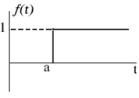
- u(t)
- u(t-a)
- u(a-t)
- -u(t-a)
(정답률: 60%)
80. 그림의 4단자 회로에서 단자 ab에서 본 구동점 임피던스 Z11[Ω]과 구동점 임피던스 Y11[s]는?
- 3 + j4, 0.211 + j0.037
- 2 + j4, 0.211 + j0.037
(정답률: 40%)
5과목: 전기설비기술기준 및 판단 기준
81. 가반형의 용접전극을 사용하는 아크용접장치를 시설할 때용접변압기의 1차측 전로의 대지전압은 몇 [V]이하이어야 하는가?
- 200
- 250
- 300
- 600
(정답률: 62%)
82. 지상에 설치한 380[V]용 저압 전동기의 금속제 외함에는 제 몇 종 접지공사를 하여야 하는가?(오류 신고가 접수된 문제입니다. 반드시 정답과 해설을 확인하시기 바랍니다.)
- 제1종접지공사
- 제2종접지공사
- 제3종접지공사
- 특별제3종접지공사
(정답률: 18%)
83. 전로의 사용전압이 400[V]미만이며, 대지전압이 150[V]이하인 경우, 이 전로의 절연저항은 몇[MΩ] 이상이어야 하는가?
- 0.1
- 0.2
- 0.3
- 0.4
(정답률: 44%)
84. 고압의 계기용 변성기의 2차측 전로에는 제 몇 종 접지공사를 하여야 하는가?
- 제1종접지공사
- 제2종접지공사
- 제3종접지공사
- 특별제3종접지공사
(정답률: 31%)
85. 교류단선식 전기철도에서 전차선로를 전용 부지위에 시설하고 전차선을 가공방식으로 할 때 최대사용전압은 몇[V]이하이여야 하는가?
- 18000
- 20000
- 23000
- 25000
(정답률: 48%)
86. 어떤 규모, 어떤 시설, 어떤 장치가 있더라도 발전소 운전에 필요한 지식 및 기능이 있는 기술원이 상시감시를 하여야 하는 발전소는?
- 원자력발전소
- 풍력발전소
- 태양전지발전소
- 내연력발전소
(정답률: 69%)
87. 고압 옥내배선 방법으로 할 수 있는 것은?
- 금속관공사
- 케이블공사
- 합성수지관공사
- 버스덕트공사
(정답률: 52%)
88. 가공전선로에 사용하는 지지물의 강도 계산에 적용하는 풍압하중 중 병종풍압하중은 갑종풍압하중에 대한 얼마의 풍압을 기초로 하여 계산한 것인가?
- 1/2
- 1/3
- 2/3
- 1/4
(정답률: 53%)
89. 고압용 또는 특별고압용 개폐기의 시설기준 사항이 아닌 것은?
- 개폐상태를 쉽게 확인할 수 없는 것은 개폐상태의 자동표 시장치를 한다.
- 중력에 의하여 작동할 수 없도록 쇄정장치를 한다.
- 고압이라는 위험 표시와 부하전류의 양을 표시한다.
- 단로기 등은 부하전류가 통하고 있을 경우 개로될수 없도 록 시설한다.
(정답률: 40%)
90. 지선을 사용하여 그 강도를 분담시켜서는 안되는 가공 전선로의 지지물은?
- 목주
- 철주
- 철근콘코리트주
- 철탑
(정답률: 68%)
91. 저압 옥내간선에서 분기하여 전기사용 기계기구에 이르는저압 옥내전로는 분기점에서 전선의 길이가 몇 [m]이하인 곳에 개폐기 및 과전류차단기를 시설하여야 하는가?
- 2
- 3
- 4
- 5
(정답률: 43%)
92. 저압 가공전선로의 지지물에 시설하는 통신선 또는 이에 직접 접속하는 가공통신선을 횡단보도교의 위에 시설하는경우에는 노면상 몇 [m]이상의 높이로 시설하면 되는가? (단, 통신선은 절연전선과 동등 이상의 절연효력이 있는 것이라고 한다.)
- 3
- 3.5
- 4
- 4.5
(정답률: 33%)
93. 고압 지중케이블로서 직접매설식에 의하여 콘코리트제 기 타 견고한 관 또는 트라프에 넣지 않고 부설할 수 있는케 이블은?
- 비닐외장케이블
- 고무외장케이블
- 클로로프렌외장케이블
- 콤바인덕트케이블
(정답률: 63%)
94. 석유류를저장하는 장소의 전등배선에 사용하지 않는방법은
- 애자사용공사
- 케이블공사
- 금속관공사
- 합성수지관공사
(정답률: 52%)
95. 사용전압이 35000[V]이하인 특별고압 가공전선이 건조물과제2차 접근상태로 시설되는 경우, 특별고압 가공전선로의보안공사는?
- 고압보안공사
- 제1종 특별고압보안공사
- 제2종 특별고압보안공사
- 제3종 특별고압보안공사
(정답률: 60%)
96. 저압 연접인입선은 인입선에서 분기하는 점으로부터 몇[m]를 넘는 지역에 미치지 아니하여야 하는가?
- 60
- 80
- 100
- 120
(정답률: 47%)
97. 사용전압 154[KV]의 가공전선과 식물사이의 이격거리는 최소 몇[m]이상이어야 하는가?
- 2
- 2.6
- 3.2
- 3.8
(정답률: 46%)
98. 발전소에 시설하지 않아도 되는 계측장치는?
- 발전기의 고정자 온도
- 주요 변압기의 역률
- 주요 변압기의 전압 및 전류 또는 전력
- 특별고압용 변압기의 온도
(정답률: 53%)
99. 중성선 다중접지식의 것으로 전로에 지기가 생겼을 때에 2초이내에 자동적으로 이를 전로로부터 차단하는 장치가 되어있는 22.9[KV] 가공전선로를 상부 조영재의 위쪽에서 접근상태로시설하는 경우, 가공전선과 건조물과의 최소 이격거리는 몇[m]인가? (단, 전선으로는 나전선을 사용한다고 한다.)
- 1.2
- 2
- 2.5
- 3
(정답률: 26%)
100. 합성수지몰드공사에 의한 저압옥내배선의 시설방법으로 옳은 것은?(오류 신고가 접수된 문제입니다. 반드시 정답과 해설을 확인하시기 바랍니다.)
- 전선으로는 단선만을 사용하고 연선을 사용하여서는 아니 된다.
- 전선으로 옥외용 비닐절연전선을 사용하였다.
- 합성수지몰드안에 전선의 접속점을 두기 위하여 합성수지 제의 죠인트 박흐를 사용하였다.
- 합성수지몰드안에는 전선의 접속점을 최소 2개소 두어야 한다.
(정답률: 26%)